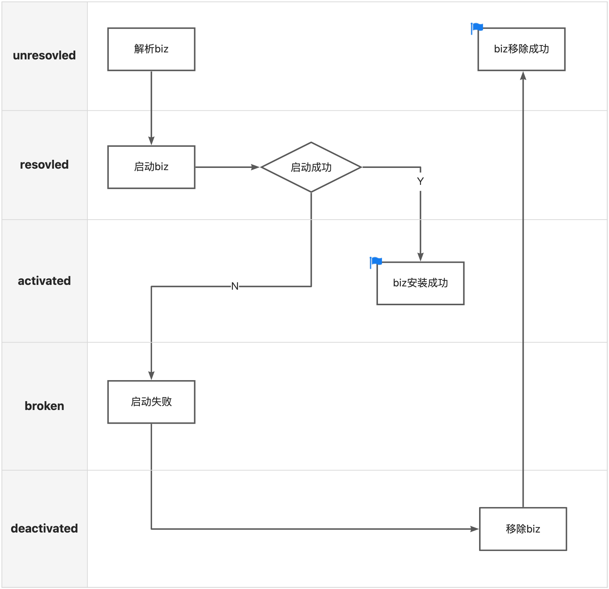

前言
在实践中，我们通常会使用业务功能模块化的开发模式，部署时将不同模块合并部署，由于团队间技术栈不统一，此时就有可能出现依赖冲突等问题。SOFAArk 定义了一种开发规范，将不同的应用模块打包成 Ark Biz，由一个基座 Biz 和多个 Biz 模块组成部署包，支持两种合并部署的方式，一种是静态合并部署，Ark Biz 以 Maven 依赖的方式引入项目；另一种是在运行时使用 API 或者 配置中心（Zookeeper）动态地安装或卸载 Biz，本文将重点讨论此方式。
Ark Biz 的生命周期
Ark Biz 的生命周期主要包含三条指令：
- install: 安装 Biz
- uninstall: 卸载 Biz
- switch: 激活 Biz
在动态的安装和卸载时，Ark Biz 会流转于生命周期的五个阶段，Biz 在不同阶段时的状态如下：
- unresolved: 未注册，此时 Biz 包未被运行时解析
- resolved: Biz 包解析完成，且已注册，此时 Biz 包还没有安装或者安装中
- activated: Biz 包启动完成，且处于激活状态，可以对外提供服务
- broken: Biz 包启动失败后状态
- deactivated: Biz 包启动完成，但处于未激活状态(注意这个状态只对 JVM 服务生效，对 RPC 等其他中间件无效)
这里我们可以看一下 Ark Biz 的数据模型 BizModel 类：
public class BizModel implements Biz {
...
private String bizName;
private String bizVersion;
private BizState bizState;
...
}
在 Ark Biz 的数据模型中 bizState 表示的就是当前状态，可以看到数据模型中定义了 Biz 包的名称和版本号，在运行时 SOFAArk 允许部署相同名称不同版本的 Biz，但只能有一个版本处于 activated 激活状态，其他版本的 Biz 状态将自动处于 deactivated 未激活状态。
install

在入口方法 ArkClient#installOperation 中，下载 Biz 包到本地临时文件，临时文件命名规则：${bizName}-${bizVersion}-${时间戳}。准备好 Biz 包后，调用 installBiz 方法，进入安装主流程。
public static ClientResponse installOperation(BizOperation bizOperation) throws Throwable {
return installOperation(bizOperation, arguments);
}
public static ClientResponse installOperation(BizOperation bizOperation, String[] args) throws Throwable {
...
if (bizOperation.getParameters().get(Constants.CONFIG_BIZ_URL) != null) {
URL url = new URL(bizOperation.getParameters().get(Constants.CONFIG_BIZ_URL));
bizFile = ArkClient.createBizSaveFile(bizOperation.getBizName(), bizOperation.getBizVersion());
FileUtils.copyInputStreamToFile(url.openStream(), bizFile);
}
return installBiz(bizFile, args);
}
安装 Ark Biz 的主流程：
- 解析 Biz 包，创建 BizModel
- 将 Ark Biz 注册到 Biz Manager 中（如果已经注册过，安装流程将直接结束，并返回提示信息）
- 启动 Ark Biz
- 如果启动失败，则关停并卸载 Ark Biz
public static ClientResponse installBiz(File bizFile, String[] args) throws Throwable {
...
Biz biz = bizFactoryService.createBiz(bizFile); // 1
ClientResponse response = new ClientResponse();
if (bizManagerService.getBizByIdentity(biz.getIdentity()) != null
|| !bizManagerService.registerBiz(biz)) { // 2
return response.setCode(ResponseCode.REPEAT_BIZ).setMessage(
String.format("Biz: %s has been installed or registered.", biz.getIdentity()));
}
try {
biz.start(args); // 3
...
response
.setCode(ResponseCode.SUCCESS)
.setMessage(
String.format("Install Biz: %s success, cost: %s ms, started at: %s",
biz.getIdentity(), end - start, startDate))
.setBizInfos(Collections.<BizInfo> singleton(biz));
return response;
} catch (Throwable throwable) {
...
response.setCode(ResponseCode.FAILED).setMessage(
String.format("Install Biz: %s fail,cost: %s ms, started at: %s",
biz.getIdentity(), end - start, startDate));
...
try {
biz.stop(); // 4
} catch (Throwable e) {
...
throw e;
} finally {
bizManagerService.unRegisterBizStrictly(biz.getBizName(), biz.getBizVersion());
}
return response;
}
}
解析 Ark Biz
当开启内嵌模式时，将 Biz 包解压到 ${Biz}-unpack 目录下，生成展开型的 Biz 包；当未开启内嵌模式时，直接使用原始的 Biz Jar 包，生成压缩型的 Biz 包。 这里生成 Biz 包是为了后续做类隔离做准备，在使用 ClassLoader.loadClass 方法查找类时，需要到不同的目标文件夹内查找。
public Biz createBiz(File file) throws IOException {
BizArchive bizArchive;
if (ArkConfigs.isEmbedEnable()) {
File unpackFile = new File(file.getAbsolutePath() + "-unpack");
if (!unpackFile.exists()) {
unpackFile = FileUtils.unzip(file, file.getAbsolutePath() + "-unpack");
}
if (file.exists()) {
file.delete();
}
file = unpackFile;
bizArchive = new ExplodedBizArchive(unpackFile);
} else {
JarFile bizFile = new JarFile(file);
JarFileArchive jarFileArchive = new JarFileArchive(bizFile);
bizArchive = new JarBizArchive(jarFileArchive);
}
BizModel biz = (BizModel) createBiz(bizArchive);
biz.setBizTempWorkDir(file);
return biz;
}
- 从 Manifest 清单文件中解析基本信息（如MainClass），根据基本信息创建 BizModel，将 Ark Biz 的状态设置为 resolved
- 创建 ClassLoader 设置到 BizModel 中
public Biz createBiz(BizArchive bizArchive) throws IOException {
...
// 1
Attributes manifestMainAttributes = bizArchive.getManifest().getMainAttributes();
bizModel
.setBizState(BizState.RESOLVED)
.setBizName(manifestMainAttributes.getValue(ARK_BIZ_NAME))
.setBizVersion(manifestMainAttributes.getValue(ARK_BIZ_VERSION))
.setMainClass(manifestMainAttributes.getValue(MAIN_CLASS_ATTRIBUTE))
...
.setClassPath(bizArchive.getUrls());
// 2
BizClassLoader bizClassLoader = new BizClassLoader(bizModel.getIdentity(),
getBizUcp(bizModel.getClassPath()), bizArchive instanceof ExplodedBizArchive
|| bizArchive instanceof DirectoryBizArchive);
bizClassLoader.setBizModel(bizModel);
bizModel.setClassLoader(bizClassLoader);
bizClassLoader.setBizModel(bizModel);
return bizModel;
}
启动 Ark Biz
- 将当前线程上下文 ClassLoader 设置为 BizModel 的 ClassLoader，并暂存原 ClassLoader
- 基于 BizModel ClassLoader 反射查找 MainClass，调用 main 方法
- 发布 AfterBizStartupEvent 事件，可以看到源码中的注释表示这里会触发健康检查，我们先记下这个点稍后解答
- 如果启动失败，就将 Ark Biz 状态设置为 broken
- 将 ClassLoader 恢复回去
- 当前配置的模式是默认激活新模块，将 Ark Biz 状态设置为 activated。检查当前是否有同名 Biz 处于 activated 状态，如果有就将旧的 Biz 状态设置为 deactivated
- 当前配置的模式不是默认激活新模块，先检查当前是否有同名 Biz 处于 activated 状态，如果没有，就将本次安装的 Ark Biz 激活；如果有，则将本次安装的 Ark Biz 状态设置为 deactivated
public void start(String[] args) throws Throwable {
...
ClassLoader oldClassLoader = ClassLoaderUtils.pushContextClassLoader(this.classLoader); // 1
EventAdminService eventAdminService = ArkServiceContainerHolder.getContainer().getService(EventAdminService.class);
try {
eventAdminService.sendEvent(new BeforeBizStartupEvent(this));
resetProperties();
if (!isMasterBizAndEmbedEnable()) {
...
// 2
MainMethodRunner mainMethodRunner = new MainMethodRunner(mainClass, args);
mainMethodRunner.run();
// this can trigger health checker handler
eventAdminService.sendEvent(new AfterBizStartupEvent(this)); // 3
...
}
} catch (Throwable e) {
bizState = BizState.BROKEN; // 4
throw e;
} finally {
ClassLoaderUtils.popContextClassLoader(oldClassLoader); // 5
}
BizManagerService bizManagerService = ArkServiceContainerHolder.getContainer().getService(BizManagerService.class);
// 6
if (Boolean.getBoolean(Constants.ACTIVATE_NEW_MODULE)) {
Biz currentActiveBiz = bizManagerService.getActiveBiz(bizName);
if (currentActiveBiz == null) {
bizState = BizState.ACTIVATED;
} else {
((BizModel) currentActiveBiz).setBizState(BizState.DEACTIVATED);
bizState = BizState.ACTIVATED;
}
} else {
// 7
if (bizManagerService.getActiveBiz(bizName) == null) {
bizState = BizState.ACTIVATED;
} else {
bizState = BizState.DEACTIVATED;
}
}
}
关停 Ark Biz
- 将当前线程上下文 ClassLoader 设置为 BizModel 的 ClassLoader，并暂存原 ClassLoader
- 将 Ark Biz 状态设置为 deactivated
- 发布 BeforeBizStopEvent 事件，可以看到源码中的注释表示这里会触发 uninstall 卸载操作，我们先记下这个点稍后解答
- 从 Biz Manager 移除本次安装的 Ark Biz
- 将 Ark Biz 状态恢复到初始状态 unresolved
- 将 ClassLoader 恢复回去
public void stop() {
...
ClassLoader oldClassLoader = ClassLoaderUtils.pushContextClassLoader(this.classLoader); // 1
bizState = BizState.DEACTIVATED; // 2
EventAdminService eventAdminService = ArkServiceContainerHolder.getContainer().getService(EventAdminService.class);
try {
// this can trigger uninstall handler
eventAdminService.sendEvent(new BeforeBizStopEvent(this)); // 3
} finally {
BizManagerService bizManagerService = ArkServiceContainerHolder.getContainer().getService(BizManagerService.class);
bizManagerService.unRegisterBiz(bizName, bizVersion); // 4
bizState = BizState.UNRESOLVED; // 5
eventAdminService.sendEvent(new BeforeBizRecycleEvent(this));
...// 省略了一部分清理缓存的代码
ClassLoaderUtils.popContextClassLoader(oldClassLoader); // 6
eventAdminService.sendEvent(new AfterBizStopEvent(this));
}
}
事件发布机制
上文中介绍了 install 的源码，在动态安装 Ark Biz 的流程中，我们遗留了两个关于事件发布的问题。
第一处是当 Ark Biz 启动成功后，发布 AfterBizStartupEvent 事件，触发健康检查：
public void start(String[] args) throws Throwable {
...
MainMethodRunner mainMethodRunner = new MainMethodRunner(mainClass, args);
mainMethodRunner.run();
// this can trigger health checker handler
eventAdminService.sendEvent(new AfterBizStartupEvent(this));
...
}
这里需要结合 SOFABoot 理解，在 SOFABoot 源码中有一个 SofaBizHealthCheckEventHandler 类，是 AfterBizStartupEvent 事件的监听器：
public class SofaBizHealthCheckEventHandler implements EventHandler<AfterBizStartupEvent> {
@Override
public void handleEvent(AfterBizStartupEvent event) {
doHealthCheck(event.getSource());
}
private void doHealthCheck(Biz biz) {
SofaRuntimeManager sofaRuntimeManager = getSofaRuntimeManager(biz);
if (!sofaRuntimeManager.isReadinessHealth()) {
throw new RuntimeException("Health check failed.");
}
}
...
}
SofaBizHealthCheckEventHandler 监听 AfterBizStartupEvent 事件，当事件发布时，就会调用 doHealthCheck 方法，从而实现在 Ark Biz 启动后，自动进行健康检查。当健康检查未通过时，会抛出异常，将进入 Ark Biz 启动失败的流程。
第二处是当 Ark Biz 启动失败，关停 Ark Biz 时，发布 BeforeBizStopEvent 事件，触发 uninstall 卸载操作：
public void stop() {
...
// this can trigger uninstall handler
eventAdminService.sendEvent(new BeforeBizStopEvent(this)); // 3
...
}
这里同样需要结合 SOFABoot 理解，在 SOFABoot 源码中有一个 SofaBizUninstallEventHandler 类，是 BeforeBizStopEvent 事件的监听器：
public class SofaBizUninstallEventHandler implements EventHandler<BeforeBizStopEvent> {
@Override
public void handleEvent(BeforeBizStopEvent event) {
doUninstallBiz(event.getSource());
}
private void doUninstallBiz(Biz biz) {
// Remove dynamic JVM service cache
DynamicJvmServiceProxyFinder.getDynamicJvmServiceProxyFinder().afterBizUninstall(biz);
SofaRuntimeProperties.unRegisterProperties(biz.getBizClassLoader());
SofaRuntimeManager sofaRuntimeManager = getSofaRuntimeManager(biz);
SofaFramework.unRegisterSofaRuntimeManager(sofaRuntimeManager);
sofaRuntimeManager.shutDownExternally();
}
...
}
SofaBizUninstallEventHandler 监听 BeforeBizStopEvent 事件，当事件发布时，调用 doUninstallBiz 方法，清理 JVM 服务、上下文参数等缓存，并在 SofaRuntimeManager#shutDownExternally 方法中关闭基座 Biz 的 Spring 上下文。
uninstall
入口方法 ArkClient#uninstallOperation 中调用 uninstallBiz 方法，进入卸载流程。
public static ClientResponse uninstallOperation(BizOperation bizOperation) throws Throwable {
...
return uninstallBiz(bizOperation.getBizName(), bizOperation.getBizVersion());
}
卸载 Ark Biz 的主流程：
- 判断要卸载的 Ark Biz 是否是基座，基座是主进程，不允许卸载
- 在 Biz Manager 中查找 Ark Biz
- 未查找到要卸载的 Ark Biz 时，返回 NOTFOUND 提示信息
- 关停 Ark Biz
- 从 Biz Manager 中移除 Ark Biz
- 卸载成功，返回成功提示
public static ClientResponse uninstallBiz(String bizName, String bizVersion) throws Throwable {
...
// 1
if (bizName.equals(ArkConfigs.getStringValue(Constants.MASTER_BIZ))) {
return new ClientResponse().setCode(ResponseCode.FAILED).setMessage("Master biz must not be uninstalled.");
}
Biz biz = bizManagerService.getBiz(bizName, bizVersion); // 2
ClientResponse response = new ClientResponse().setCode(ResponseCode.NOT_FOUND_BIZ) // 3
.setMessage(
String.format("Uninstall biz: %s not found.",
BizIdentityUtils.generateBizIdentity(bizName, bizVersion)));
if (biz != null) {
try {
biz.stop(); // 4
} catch (Throwable throwable) {
...
throw throwable;
} finally {
bizManagerService.unRegisterBizStrictly(biz.getBizName(), biz.getBizVersion()); // 5
}
// 6
response.setCode(ResponseCode.SUCCESS).setMessage(String.format("Uninstall biz: %s success.", biz.getIdentity()));
}
return response;
}
switch
入口方法 ArkClient#switchOperation 中调用 switchBiz 方法，进入激活 Biz 流程。
public static ClientResponse switchOperation(BizOperation bizOperation) {
...
return switchBiz(bizOperation.getBizName(), bizOperation.getBizVersion());
}
激活 Ark Biz 的主流程：
- 在 Biz Manager 中查找 Ark Biz
- 未查找到 Ark Biz 时，返回 NOTFOUND 提示信息
- 当要激活的 Ark Biz 状态不是 activated 或 deactivated，Ark Biz 没有成功安装过，不能直接激活，此时返回 ILLEGAL_STATE 提示信息
- 激活 Ark Biz
public static ClientResponse switchBiz(String bizName, String bizVersion) {
...
Biz biz = bizManagerService.getBiz(bizName, bizVersion); // 1
ClientResponse response = new ClientResponse().setCode(ResponseCode.NOT_FOUND_BIZ) // 2
.setMessage(
String.format("Switch biz: %s not found.",
BizIdentityUtils.generateBizIdentity(bizName, bizVersion)));
if (biz != null) {
if (biz.getBizState() != BizState.ACTIVATED
&& biz.getBizState() != BizState.DEACTIVATED) {
// 3
response.setCode(ResponseCode.ILLEGAL_STATE_BIZ).setMessage(
String.format("Switch Biz: %s's state must not be %s.", biz.getIdentity(),
biz.getBizState()));
} else {
eventAdminService.sendEvent(new BeforeBizSwitchEvent(biz));
bizManagerService.activeBiz(bizName, bizVersion); // 4
eventAdminService.sendEvent(new AfterBizSwitchEvent(biz));
response.setCode(ResponseCode.SUCCESS).setMessage(
String.format("Switch biz: %s is activated.", biz.getIdentity()));
}
}
...
return response;
}
激活 Ark Biz 时，需要先查找当前是否有同名 Biz 处于激活状态，如果有需要将状态切换为 deactivated，再将本次要激活的 Ark Biz 状态设置为 activated。
public void activeBiz(String bizName, String bizVersion) {
...
Biz biz = getBiz(bizName, bizVersion);
Biz activeBiz = getActiveBiz(bizName);
if (biz != null && biz.getBizState() == BizState.DEACTIVATED) {
if (activeBiz != null) {
((BizModel) activeBiz).setBizState(BizState.DEACTIVATED);
}
((BizModel) biz).setBizState(BizState.ACTIVATED);
}
}
Telnet 指令
SOFAArk 提供了 telnet 小工具，用于运行时查看容器状态、执行动态部署指令等，接下来介绍下 telnet 小工具是如何实现动态部署的。
NettyTelnetHandler 作为 telnet 的入口，监听用户输入信息，委托 ArkCommandHandler 处理，并返回结果输出到控制台中。
static class NettyTelnetHandler extends SimpleChannelInboundHandler<String> {
private static ArkCommandHandler arkCommandHandler = new ArkCommandHandler();
...
@Override
protected void channelRead0(ChannelHandlerContext ctx, String msg) throws Exception {
...
ctx.write(arkCommandHandler.responseMessage(msg));
...
}
}
ArkCommandHandler 中委托 CommandProvider 解析用户输入的命令：
public String responseMessage(String cmd) {
String commandResult = handleCommand(cmd);
...
return commandResult;
}
public String handleCommand(String cmdLine) {
...
for (ServiceReference<CommandProvider> commandService : commandProviders) {
CommandProvider commandProvider = commandService.getService();
if (commandProvider.validate(cmdLine)) {
return commandProvider.handleCommand(cmdLine);
}
}
return helpMessage(commandProviders);
}
在 BizCommandProvider 中委托 BizCommand 处理用户输入的命令：
public String handleCommand(String command) {
return new BizCommand(command).process();
}
在 BizCommand 中，根据用户输入命令调用相应的编程 API，以安装 Ark Biz 为例：
- 用户输入命令为 i 时，调用 installBiz 方法，进入安装流程
- 将用户输入的参数部分组装成 BizOperation
- 调用 ArkClient.installOperation 进入安装主流程
String process() {
...
if (options.contains('h')) {
return HELP_MESSAGE;
} else if (options.contains('a')) {
return bizList();
} else if (options.contains('i')) {
return installBiz();// 1
} else if (options.contains('u')) {
return uninstallBiz();
} else if (options.contains('o')) {
return switchBiz();
} else {
...
}
return sb.toString();
}
String installBiz() {
...
BizOperation bizOperation = new BizOperation().setOperationType(BizOperation.OperationType.INSTALL);
String param = parameters.toArray(new String[] {})[0];
try {
// 2
URL url = new URL(param);
bizOperation.putParameter(Constants.CONFIG_BIZ_URL, param);
} catch (Throwable t) {
String[] nameAndVersion = param.split(Constants.STRING_COLON);
if (nameAndVersion.length != 2) {
LOGGER.error("Invalid telnet biz install command {}", param);
return;
}
bizOperation.setBizName(nameAndVersion[0]).setBizVersion(nameAndVersion[1]);
}
try {
ArkClient.installOperation(bizOperation); // 3
} catch (Throwable throwable) {
LOGGER.error("Fail to process telnet install command: " + param, throwable);
}
...
}
telnet 服务端只是 SOFAArk 提供的方便运行时查看信息工具，不推荐直接通过 telnet 指令在线上执行 Biz 操作指令，推荐使用 API 或者动态配置方式。
Zookeeper 动态配置
SOFAArk 提供的动态配置插件，通过 Zookeeper 下发动态部署指令
<dependency>
<groupId>com.alipay.sofa</groupId>
<artifactId>config-ark-plugin</artifactId>
<version>${sofa.ark.version}</version>
</dependency>
在 ConfigProcessor 入口类中，注册定时任务，长轮询拉取配置数据：
public void start() {
commonThreadPool.getExecutor().execute(new ConfigTask());
}
class ConfigTask implements Runnable {
@Override
public void run() {
while (true) {
...
String config = configDeque.poll();
if (config == null) {
sleep(200);
continue;
}
...
OperationProcessor.process(OperationTransformer.transformToBizOperation(config, pluginContext));
...
}
}
}
调用 OperationTransformer#transformToBizOperation 方法将配置数据转换为 BizOperation，此处的源码不做详细说明，感兴趣的同学可以结合Zookeeper 配置阅读源码
在 OperationProcessor#process 方法中，根据指令类型，调用 ArkClient 的不同方法：
public static List<ClientResponse> process(List<BizOperation> bizOperations) {
List<ClientResponse> clientResponses = new ArrayList<>();
try {
for (BizOperation bizOperation : bizOperations) {
...
switch (bizOperation.getOperationType()) {
case INSTALL:
clientResponses.add(ArkClient.installOperation(bizOperation));
break;
case UNINSTALL:
clientResponses.add(ArkClient.uninstallOperation(bizOperation));
break;
case SWITCH:
clientResponses.add(ArkClient.switchOperation(bizOperation));
break;
case CHECK:
clientResponses.add(ArkClient.checkOperation(bizOperation));
break;
...
}
}
} catch (Throwable throwable) {
throw new ArkRuntimeException("Failed to execute biz operations.", throwable);
}
return clientResponses;
}
check
Zookeeper 动态下发指令支持 check指令，check 指令用于查询 Ark Biz 安装情况。
入口方法 ArkClient#checkOperation 中调用 checkBiz 方法，进入查询 Biz 流程。
public static ClientResponse checkOperation(BizOperation bizOperation) {
...
return checkBiz(bizOperation.getBizName(), bizOperation.getBizVersion());
}
查询 Ark Biz 的主流程：
- 在 Biz Manager 中查找 Ark Biz
- 当 Ark Biz 名称和版本都传入的情况，在 Biz Manager 中查找指定名称和版本的 Ark Biz
- 当传入 Ark Biz 名称的情况，在 Biz Manager 中查找该名称所有版本的 Ark Biz
- 当没有传入参数的情况，将在 Biz Manager 中注册的所有 Ark Biz 都查找出来
- 将符合条件的 Ark Biz 组装并返回
public static ClientResponse checkBiz(String bizName, String bizVersion) {
...
ClientResponse response = new ClientResponse();
Set<BizInfo> bizInfoSet = new HashSet<>();
if (bizName != null && bizVersion != null) {
// 1.1
Biz biz = bizManagerService.getBiz(bizName, bizVersion);
if (biz != null) {
bizInfoSet.add(biz);
}
} else if (bizName != null) {
// 1.2
bizInfoSet.addAll(bizManagerService.getBiz(bizName));
} else {
// 1.3
bizInfoSet.addAll(bizManagerService.getBizInOrder());
}
// 2
StringBuilder sb = new StringBuilder();
sb.append(String.format("Biz count=%d", bizInfoSet.size())).append("\n");
for (BizInfo bizInfo : bizInfoSet) {
sb.append(
String.format("bizName=%s, bizVersion=%s, bizState=%s", bizInfo.getBizName(),
bizInfo.getBizVersion(), bizInfo.getBizState())).append("\n");
}
response.setCode(ResponseCode.SUCCESS).setBizInfos(bizInfoSet).setMessage(sb.toString());
LOGGER.info(String.format("Check Biz: %s", response.getMessage()));
return response;
}
激活 Ark Biz 时，需要先查找当前是否有同名 Biz 处于激活状态，如果有需要将状态切换为 deactivated，再将本次要激活的 Ark Biz 状态设置为 activated。
public void activeBiz(String bizName, String bizVersion) {
...
Biz biz = getBiz(bizName, bizVersion);
Biz activeBiz = getActiveBiz(bizName);
if (biz != null && biz.getBizState() == BizState.DEACTIVATED) {
if (activeBiz != null) {
((BizModel) activeBiz).setBizState(BizState.DEACTIVATED);
}
((BizModel) biz).setBizState(BizState.ACTIVATED);
}
}
总结
SOFAArk 通过轻量级的类隔离+动态装载的能力实现了动态合并部署，使开着飞机换引擎成为可能，能够极大的提升开发效率及应用可扩展性。